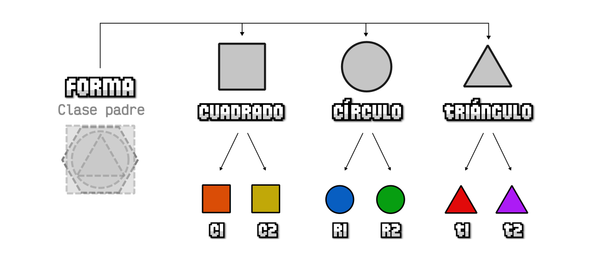

Unidad 9 · Semana 8 · Martes
Programación orientada a objetos
Una forma de organizar programas más grandes: moldes (clases) que juntan los datos con las funciones que trabajan sobre ellos.
Al terminar esta unidad vas a poder
- Definir clases con constructor, propiedades y métodos.
- Crear instancias con
newy entender qué esthis. - Reutilizar código con herencia (
extendsysuper). - Aplicar polimorfismo y encapsulamiento con propiedades privadas.
- Usar clases para organizar una aplicación con DOM.
¿Por qué clases?
En la Unidad 4 representamos productos con objetos literales. Funciona bien hasta que necesitás muchos objetos con la misma forma y comportamiento (calcular su precio, vender, describirse). Ahí terminás con funciones sueltas por todos lados y objetos que se escriben a mano, con el riesgo de olvidarte una propiedad.
Una clase es un molde: define qué datos tiene cada objeto y qué puede hacer. Cada objeto creado a partir de ese molde es una instancia.
Ya venías usando clases sin saberlo: new Date() crea una instancia de la
clase Date, y new Error("...") una de Error.
Por eso las fechas tienen métodos como getFullYear().
Clases, constructor e instancias
class Producto {
// El constructor se ejecuta automáticamente al hacer "new"
constructor(nombre, precio, stock) {
this.nombre = nombre; // propiedades (atributos)
this.precio = precio;
this.stock = stock;
}
// Métodos: funciones que pertenecen a la clase
hayStock() {
return this.stock > 0;
}
vender(cantidad) {
if (cantidad > this.stock) {
console.log(`No hay suficiente stock de ${this.nombre}`);
return false;
}
this.stock -= cantidad;
return true;
}
}
// Instanciación: crear objetos a partir del molde
const teclado = new Producto("Teclado", 25000, 4);
const mouse = new Producto("Mouse", 12000, 0);
console.log(teclado.nombre); // "Teclado"
console.log(mouse.hayStock()); // false
teclado.vender(3);
console.log(teclado.stock); // 1¿Qué es this?
Dentro de una clase, this significa “el objeto con el que se está
trabajando”. Cuando llamás a teclado.vender(3),
this es teclado; cuando llamás a
mouse.vender(1), this es mouse. Así el mismo
método sirve para todas las instancias.
Por convención, los nombres de clases se escriben en PascalCase:
con mayúscula inicial (Producto, CuentaBancaria). Así se
distinguen a simple vista de las variables y funciones.
Herencia
La herencia permite crear una clase nueva a partir de otra existente: la clase hija recibe todas las propiedades y métodos de la clase padre, y puede agregar los suyos o reemplazar (sobrescribir) los que necesite.
class Producto {
constructor(nombre, precio) {
this.nombre = nombre;
this.precio = precio;
}
precioFinal() {
return this.precio;
}
describir() {
return `${this.nombre}: $${this.precioFinal()}`;
}
}
class ProductoEnOferta extends Producto {
constructor(nombre, precio, descuento) {
super(nombre, precio); // llama al constructor del padre
this.descuento = descuento; // y agrega lo propio
}
// Sobrescribe el método del padre
precioFinal() {
return this.precio * (1 - this.descuento / 100);
}
// Extiende el método del padre usando super.metodo()
describir() {
return `${super.describir()} 🔥 ${this.descuento}% OFF`;
}
}
const remera = new Producto("Remera", 15000);
const gorra = new ProductoEnOferta("Gorra", 10000, 20);
console.log(remera.describir()); // "Remera: $15000"
console.log(gorra.describir()); // "Gorra: $8000 🔥 20% OFF"extendsindica de qué clase hereda.- En el constructor de la hija,
super(...)tiene que llamarse antes de usarthis. super.metodo()llama a la versión del padre de un método.
Usá herencia solo cuando se pueda decir “es un”: un producto en oferta es un producto; un círculo es una forma. Si no suena natural, probablemente no corresponde.
Polimorfismo
Polimorfismo significa que objetos de clases distintas pueden responder al mismo método, cada uno a su manera. Quien los usa no necesita saber de qué clase es cada uno.

Forma es la clase padre; Cuadrado, Circulo y
Triangulo heredan de ella. Abajo, instancias de cada una.
class Forma {
constructor(nombre) {
this.nombre = nombre;
}
area() {
return 0; // cada hija lo va a sobrescribir
}
describir() {
return `${this.nombre} de área ${this.area().toFixed(2)}`;
}
}
class Cuadrado extends Forma {
constructor(lado) {
super("Cuadrado");
this.lado = lado;
}
area() {
return this.lado ** 2;
}
}
class Circulo extends Forma {
constructor(radio) {
super("Círculo");
this.radio = radio;
}
area() {
return Math.PI * this.radio ** 2;
}
}
class Triangulo extends Forma {
constructor(base, altura) {
super("Triángulo");
this.base = base;
this.altura = altura;
}
area() {
return (this.base * this.altura) / 2;
}
}
const formas = [new Cuadrado(4), new Circulo(3), new Triangulo(6, 2)];
// No importa qué forma sea: todas saben responder a describir()
formas.forEach((forma) => console.log(forma.describir()));
Fijate que describir() está escrito una sola vez, en
Forma, pero llama a this.area(), que es distinto en cada
clase hija. Si mañana agregás un Rectangulo, el resto del código sigue
funcionando sin cambios.
Para preguntar si un objeto es de una clase (o de una hija suya) existe instanceof:
formas[0] instanceof Cuadrado; // true
formas[0] instanceof Forma; // true (un cuadrado también es una forma)
formas[0] instanceof Circulo; // falseEncapsulamiento
Encapsular es proteger los datos internos de un objeto para que solo
se puedan modificar a través de sus métodos, que se encargan de validar. En
JavaScript, las propiedades que empiezan con # son
privadas: solo existen dentro de la clase.
class CuentaBancaria {
#saldo = 0; // propiedad privada
constructor(titular) {
this.titular = titular;
}
// "get" permite leer el saldo como si fuera una propiedad, pero no modificarlo
get saldo() {
return this.#saldo;
}
depositar(monto) {
if (monto <= 0) {
throw new Error("El monto debe ser positivo");
}
this.#saldo += monto;
}
extraer(monto) {
if (monto > this.#saldo) {
throw new Error("Saldo insuficiente");
}
this.#saldo -= monto;
}
}
const cuenta = new CuentaBancaria("Ana");
cuenta.depositar(5000);
cuenta.extraer(2000);
console.log(cuenta.saldo); // 3000
try {
cuenta.extraer(10000);
} catch (error) {
console.log(error.message); // "Saldo insuficiente"
}
// cuenta.#saldo = 1000000; ❌ SyntaxError: no se puede acceder desde afuera
Sin el #, cualquier parte del programa podría escribir
cuenta.saldo = -500 y dejar la cuenta en un estado imposible. Con
encapsulamiento, la única forma de cambiar el saldo es pasando por las validaciones.
Los cuatro pilares
Estos son los conceptos que vas a encontrar en cualquier material de POO, en cualquier lenguaje:
| Concepto | Idea | En esta unidad |
|---|---|---|
| Abstracción | Modelar solo lo que importa para el problema. | Un Producto tiene nombre, precio y stock; no color favorito del fabricante. |
| Encapsulamiento | Ocultar los datos internos y exponer métodos seguros. | #saldo y los métodos depositar / extraer. |
| Herencia | Crear clases a partir de otras, reutilizando código. | ProductoEnOferta extends Producto. |
| Polimorfismo | Mismo método, comportamiento distinto según la clase. | area() en cada Forma. |
Clases + DOM: organizar una app
Donde más se nota la ventaja de las clases es al ordenar una aplicación: una clase se ocupa de los datos y las reglas, y el resto del código solo se ocupa de la pantalla y los eventos.
class Carrito {
#items = [];
agregar(producto) {
const item = this.#items.find((i) => i.producto.nombre === producto.nombre);
if (item) {
item.cantidad++;
} else {
this.#items.push({ producto: producto, cantidad: 1 });
}
}
cantidad() {
return this.#items.reduce((total, i) => total + i.cantidad, 0);
}
total() {
return this.#items.reduce((total, i) => total + i.producto.precioFinal() * i.cantidad, 0);
}
}
// ---- Interfaz: solo habla con el carrito a través de sus métodos ----
const carrito = new Carrito();
const resumen = document.querySelector("#resumen");
function actualizarResumen() {
resumen.textContent = `🛒 ${carrito.cantidad()} productos — $${carrito.total()}`;
}
document.querySelector("#agregar-gorra").addEventListener("click", () => {
carrito.agregar(gorra); // la gorra en oferta de la sección de herencia
actualizarResumen();
});-
En realidad JavaScript no usa clases “de verdad” por dentro, sino
prototipos;
classes una forma más cómoda de escribirlos. Buscá qué es la cadena de prototipos. - Métodos y propiedades
static: pertenecen a la clase, no a cada instancia. - Los
set(setters), la pareja de losget. - “Composición sobre herencia”: ¿por qué muchos programadores prefieren evitar las jerarquías largas?
- ¿Qué pasa si hacés
JSON.stringify()de una instancia? ¿Se guardan los métodos? ¿Y las propiedades privadas?
Práctica
1 · Libro
Creá una clase Libro con título, autor, páginas y un estado
leido (arranca en false). Métodos:
marcarLeido() y describir(), que devuelva por ejemplo
"Rayuela, de Julio Cortázar (600 págs.) ✓ leído". Creá un array con 3
libros y mostrá solo los que no leíste.
2 · Rectángulo
Agregá una clase Rectangulo a la jerarquía de Forma. Después
hacé que Cuadrado herede de Rectangulo en lugar de
Forma. ¿Qué código te ahorrás?
3 · Empleados
Una clase Empleado con nombre y sueldo base, y un método
sueldoFinal(). Dos clases hijas: Vendedor (suma un 5 % de
sus ventas del mes) y Gerente (suma un bono fijo). Con un array de
empleados mezclados, calculá el total a pagar usando reduce y
polimorfismo.
4 · Cuenta con historial
Ampliá CuentaBancaria para que guarde un historial privado de
movimientos ({ tipo, monto, fecha }) y tenga un método
ultimosMovimientos(n). Armale una interfaz con un formulario para
depositar y extraer, que muestre los errores en la página.
5 · Lista de tareas con clases (integrador)
Reescribí la lista de tareas de la Unidad 7 con una clase
ListaDeTareas que tenga las tareas en una propiedad privada y los
métodos agregar(texto), alternar(id),
borrar(id), pendientes(), todas(),
guardar() y cargar().
El código de la interfaz (eventos y mostrarTareas) no puede tocar el
array directamente ni usar localStorage: solo llama a métodos de la
clase.
Pista
JSON.stringify(this) no incluye las propiedades privadas. En
guardar() convertí directamente el array:
JSON.stringify(this.#tareas).